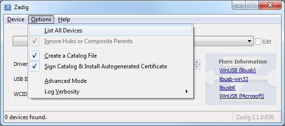
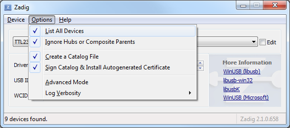
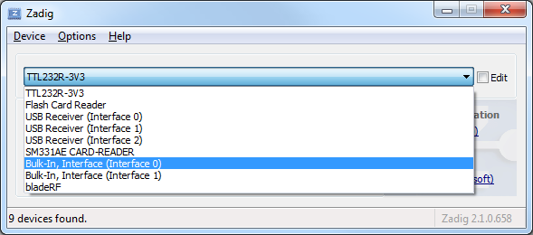
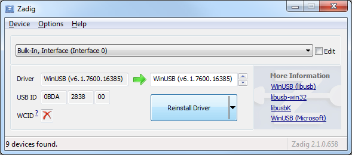
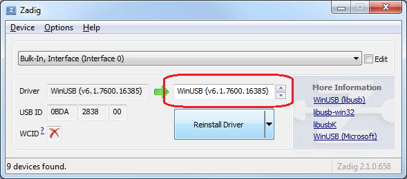

RTL-SDR devices require a special driver installation to work correctly with SeeDeR.
When you first plug in your RTL-SDR dongle, Windows will automatically install its own drivers. Wait for Windows to finish, and then follow the directions below to overwrite the drivers. Zadig should launch automatically.
First, click options:
Then, click "List All Devices":
Click on the device dropdown and select "Bulk-In, Interface (Interface 0):
 Next, ensure that WinUSB is selected as the driver to install:
Finally, click "Reinstall Driver":

You may now close Zadig and continue with the installation.